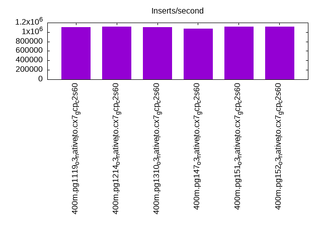
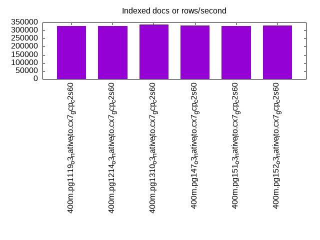
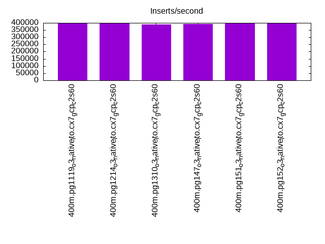
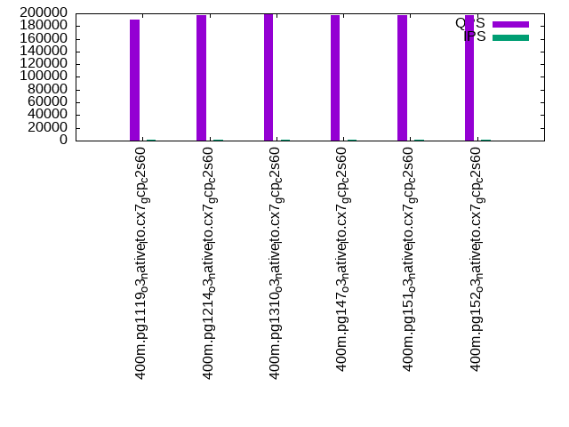
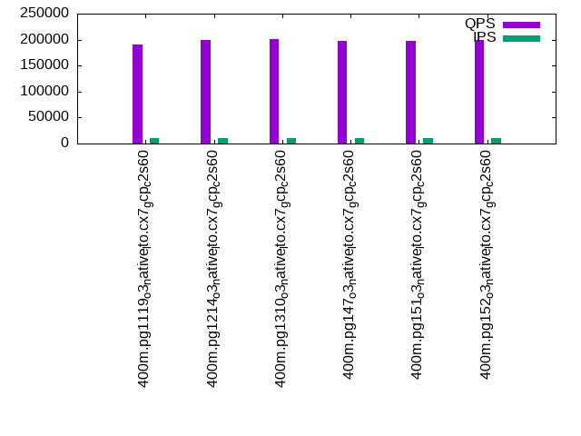
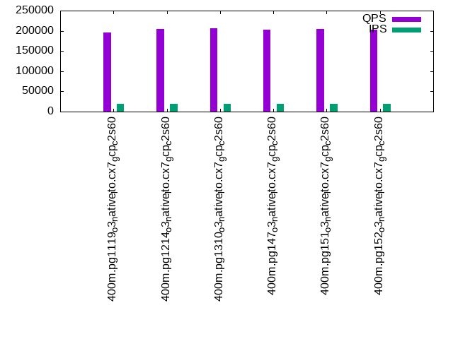

This is a report for the insert benchmark with 400M docs and 20 client(s). It is generated by scripts (bash, awk, sed) and Tufte might not be impressed. An overview of the insert benchmark is here and a short update is here. Below, by DBMS, I mean DBMS+version.config. An example is my8020.c10b40 where my means MySQL, 8020 is version 8.0.20 and c10b40 is the name for the configuration file.
The test server is a c2-standard-60 from GCP with 30 cores, hyperthreading disabled, 240G RAM and 3T from XFS and SW RAID 0 striped over 8 local NVMe drives. The benchmark was run with 20 clients and there were 1 or 2 connections per client (1 for queries, 1 for inserts). The benchmark loads 400M rows without secondary indexes, creates secondary indexes, loads another 400M rows then does 3 read+write tests for one hour each that do queries as fast as possible with 100, 500 and then 1000 writes/second/client concurrent with the queries. Each read-write test runs for 1800 seconds. The test was configured to use one table. The database fits in the DBMS buffer pool. Clients and the DBMS share one server. The per-database configs are in the per-database subdirectories here.
The tested DBMS are:
The numbers are inserts/s for l.i0 and l.i1, indexed docs (or rows) /s for l.x and queries/s for q*.2. The values are the average rate over the entire test for inserts (IPS) and queries (QPS). The range of values for IPS and QPS is split into 3 parts: bottom 25%, middle 50%, top 25%. Values in the bottom 25% have a red background, values in the top 25% have a green background and values in the middle have no color. A gray background is used for values that can be ignored because the DBMS did not sustain the target insert rate. Red backgrounds are not used when the minimum value is within 80% of the max value.
| dbms | l.i0 | l.x | l.i1 | q100.1 | q500.1 | q1000.1 |
|---|---|---|---|---|---|---|
| 400m.pg1119_o3_native_lto.cx7_gcp_c2s60 | 1108033 | 326879 | 396432 | 189845 | 191245 | 195503 |
| 400m.pg1214_o3_native_lto.cx7_gcp_c2s60 | 1111111 | 327951 | 398010 | 197494 | 200007 | 205299 |
| 400m.pg1310_o3_native_lto.cx7_gcp_c2s60 | 1101928 | 338208 | 388350 | 199219 | 201186 | 205778 |
| 400m.pg147_o3_native_lto.cx7_gcp_c2s60 | 1072386 | 331483 | 392157 | 196892 | 198364 | 203390 |
| 400m.pg151_o3_native_lto.cx7_gcp_c2s60 | 1114206 | 328220 | 396040 | 197884 | 198355 | 203902 |
| 400m.pg152_o3_native_lto.cx7_gcp_c2s60 | 1117318 | 331483 | 396040 | 197851 | 198846 | 203524 |
This lists the average rate of inserts/s for the tests that do inserts concurrent with queries. For such tests the query rate is listed in the table above. The read+write tests are setup so that the insert rate should match the target rate every second. Cells that are not at least 95% of the target have a red background to indicate a failure to satisfy the target.
| dbms | q100.1 | q500.1 | q1000.1 |
|---|---|---|---|
| pg1119_o3_native_lto.cx7_gcp_c2s60 | 1976 | 9890 | 19758 |
| pg1214_o3_native_lto.cx7_gcp_c2s60 | 1977 | 9885 | 19769 |
| pg1310_o3_native_lto.cx7_gcp_c2s60 | 1976 | 9885 | 19769 |
| pg147_o3_native_lto.cx7_gcp_c2s60 | 1976 | 9885 | 19769 |
| pg151_o3_native_lto.cx7_gcp_c2s60 | 1976 | 9885 | 19769 |
| pg152_o3_native_lto.cx7_gcp_c2s60 | 1976 | 9885 | 19769 |
| target | 2000 | 10000 | 20000 |
l.i0: load without secondary indexes. Graphs for performance per 1-second interval are here.
Average throughput:
Insert response time histogram: each cell has the percentage of responses that take <= the time in the header and max is the max response time in seconds. For the max column values in the top 25% of the range have a red background and in the bottom 25% of the range have a green background. The red background is not used when the min value is within 80% of the max value.
| dbms | 256us | 1ms | 4ms | 16ms | 64ms | 256ms | 1s | 4s | 16s | gt | max |
|---|---|---|---|---|---|---|---|---|---|---|---|
| pg1119_o3_native_lto.cx7_gcp_c2s60 | 25.318 | 71.429 | 3.195 | 0.015 | 0.025 | 0.018 | 0.813 | ||||
| pg1214_o3_native_lto.cx7_gcp_c2s60 | 25.467 | 71.174 | 3.311 | 0.009 | 0.025 | 0.015 | 0.729 | ||||
| pg1310_o3_native_lto.cx7_gcp_c2s60 | 26.135 | 70.323 | 3.484 | 0.019 | 0.023 | 0.016 | nonzero | 1.290 | |||
| pg147_o3_native_lto.cx7_gcp_c2s60 | 22.426 | 74.038 | 3.478 | 0.019 | 0.025 | 0.013 | 0.001 | 1.364 | |||
| pg151_o3_native_lto.cx7_gcp_c2s60 | 27.644 | 69.081 | 3.222 | 0.012 | 0.028 | 0.013 | 0.984 | ||||
| pg152_o3_native_lto.cx7_gcp_c2s60 | 27.447 | 69.365 | 3.137 | 0.015 | 0.024 | 0.012 | 0.001 | 1.151 |
Performance metrics for the DBMS listed above. Some are normalized by throughput, others are not. Legend for results is here.
ips qps rps rmbps wps wmbps rpq rkbpq wpi wkbpi csps cpups cspq cpupq dbgb1 dbgb2 rss maxop p50 p99 tag 1108033 0 0 0.0 1764.4 421.0 0.000 0.000 0.002 0.389 350126 57.7 0.316 16 44.2 114.1 NA 0.813 61833 9693 400m.pg1119_o3_native_lto.cx7_gcp_c2s60 1111111 0 0 0.0 1785.1 427.3 0.000 0.000 0.002 0.394 308509 57.4 0.278 15 43.0 112.3 0.0 0.729 61833 12986 400m.pg1214_o3_native_lto.cx7_gcp_c2s60 1101928 0 0 0.0 1726.0 422.9 0.000 0.000 0.002 0.393 324734 57.2 0.295 16 43.0 114.9 NA 1.290 61563 8091 400m.pg1310_o3_native_lto.cx7_gcp_c2s60 1072386 0 0 0.0 1621.8 407.2 0.000 0.000 0.002 0.389 331475 56.6 0.309 16 43.0 116.5 NA 1.364 59833 12990 400m.pg147_o3_native_lto.cx7_gcp_c2s60 1114206 0 0 0.0 1707.0 419.3 0.000 0.000 0.002 0.385 328361 56.9 0.295 15 43.0 113.7 NA 0.984 61933 11287 400m.pg151_o3_native_lto.cx7_gcp_c2s60 1117318 0 0 0.0 1662.9 414.6 0.000 0.000 0.001 0.380 327166 57.3 0.293 15 43.0 113.5 NA 1.151 61733 9190 400m.pg152_o3_native_lto.cx7_gcp_c2s60
l.x: create secondary indexes.
Average throughput:
Performance metrics for the DBMS listed above. Some are normalized by throughput, others are not. Legend for results is here.
ips qps rps rmbps wps wmbps rpq rkbpq wpi wkbpi csps cpups cspq cpupq dbgb1 dbgb2 rss maxop p50 p99 tag 326879 0 1438 19.7 640.6 133.1 0.004 0.062 0.002 0.417 2019 3.3 0.006 3 79.5 155.2 0.0 0.002 NA NA 400m.pg1119_o3_native_lto.cx7_gcp_c2s60 327951 0 1654 19.8 650.3 129.4 0.005 0.062 0.002 0.404 1882 3.3 0.006 3 78.3 153.5 0.0 0.002 NA NA 400m.pg1214_o3_native_lto.cx7_gcp_c2s60 338208 0 890 16.2 395.3 93.3 0.003 0.049 0.001 0.282 802 3.3 0.002 3 78.3 150.8 0.0 0.013 NA NA 400m.pg1310_o3_native_lto.cx7_gcp_c2s60 331483 0 1607 17.2 399.6 95.1 0.005 0.053 0.001 0.294 1304 3.2 0.004 3 78.3 152.5 0.0 0.002 NA NA 400m.pg147_o3_native_lto.cx7_gcp_c2s60 328220 0 2422 15.3 450.2 105.2 0.007 0.048 0.001 0.328 1397 3.1 0.004 3 78.3 152.2 0.0 0.011 NA NA 400m.pg151_o3_native_lto.cx7_gcp_c2s60 331483 0 2487 17.2 469.2 108.7 0.008 0.053 0.001 0.336 1395 3.1 0.004 3 78.3 152.7 0.0 0.010 NA NA 400m.pg152_o3_native_lto.cx7_gcp_c2s60
l.i1: continue load after secondary indexes created. Graphs for performance per 1-second interval are here.
Average throughput:
Insert response time histogram: each cell has the percentage of responses that take <= the time in the header and max is the max response time in seconds. For the max column values in the top 25% of the range have a red background and in the bottom 25% of the range have a green background. The red background is not used when the min value is within 80% of the max value.
| dbms | 256us | 1ms | 4ms | 16ms | 64ms | 256ms | 1s | 4s | 16s | gt | max |
|---|---|---|---|---|---|---|---|---|---|---|---|
| pg1119_o3_native_lto.cx7_gcp_c2s60 | 94.637 | 4.305 | 1.015 | 0.026 | 0.016 | 0.001 | 1.199 | ||||
| pg1214_o3_native_lto.cx7_gcp_c2s60 | 94.561 | 4.407 | 0.992 | 0.026 | 0.013 | 0.865 | |||||
| pg1310_o3_native_lto.cx7_gcp_c2s60 | 94.303 | 4.575 | 1.079 | 0.027 | 0.017 | 0.775 | |||||
| pg147_o3_native_lto.cx7_gcp_c2s60 | 94.401 | 4.571 | 0.993 | 0.022 | 0.012 | 0.001 | 1.155 | ||||
| pg151_o3_native_lto.cx7_gcp_c2s60 | 94.504 | 4.490 | 0.968 | 0.020 | 0.018 | nonzero | 1.046 | ||||
| pg152_o3_native_lto.cx7_gcp_c2s60 | 94.562 | 4.391 | 1.005 | 0.026 | 0.016 | 0.959 |
Performance metrics for the DBMS listed above. Some are normalized by throughput, others are not. Legend for results is here.
ips qps rps rmbps wps wmbps rpq rkbpq wpi wkbpi csps cpups cspq cpupq dbgb1 dbgb2 rss maxop p50 p99 tag 396432 0 3106 28.0 2489.5 417.0 0.008 0.072 0.006 1.077 286909 52.8 0.724 40 176.5 312.4 0.0 1.199 24484 1698 400m.pg1119_o3_native_lto.cx7_gcp_c2s60 398010 0 2999 27.8 2466.9 390.4 0.008 0.072 0.006 1.004 277376 53.3 0.697 40 170.2 305.6 0.0 0.865 24473 1848 400m.pg1214_o3_native_lto.cx7_gcp_c2s60 388350 0 2910 27.0 2535.3 440.4 0.007 0.071 0.007 1.161 285834 52.1 0.736 40 170.2 317.5 NA 0.775 24269 1399 400m.pg1310_o3_native_lto.cx7_gcp_c2s60 392157 0 2982 27.3 2367.0 421.9 0.008 0.071 0.006 1.102 298429 52.7 0.761 40 170.2 330.7 0.0 1.155 24074 1648 400m.pg147_o3_native_lto.cx7_gcp_c2s60 396040 0 2999 27.7 2388.5 419.8 0.008 0.072 0.006 1.085 290452 52.3 0.733 40 170.2 329.1 NA 1.046 24383 1448 400m.pg151_o3_native_lto.cx7_gcp_c2s60 396040 0 3098 27.8 2399.0 433.7 0.008 0.072 0.006 1.121 282779 52.6 0.714 40 170.2 324.2 NA 0.959 24473 1648 400m.pg152_o3_native_lto.cx7_gcp_c2s60
q100.1: range queries with 100 insert/s per client. Graphs for performance per 1-second interval are here.
Average throughput:
Query response time histogram: each cell has the percentage of responses that take <= the time in the header and max is the max response time in seconds. For max values in the top 25% of the range have a red background and in the bottom 25% of the range have a green background. The red background is not used when the min value is within 80% of the max value.
| dbms | 256us | 1ms | 4ms | 16ms | 64ms | 256ms | 1s | 4s | 16s | gt | max |
|---|---|---|---|---|---|---|---|---|---|---|---|
| pg1119_o3_native_lto.cx7_gcp_c2s60 | 99.971 | 0.022 | 0.006 | 0.001 | nonzero | 0.025 | |||||
| pg1214_o3_native_lto.cx7_gcp_c2s60 | 99.975 | 0.018 | 0.006 | 0.001 | nonzero | 0.023 | |||||
| pg1310_o3_native_lto.cx7_gcp_c2s60 | 99.977 | 0.016 | 0.006 | 0.001 | nonzero | 0.024 | |||||
| pg147_o3_native_lto.cx7_gcp_c2s60 | 99.975 | 0.018 | 0.006 | 0.001 | nonzero | 0.028 | |||||
| pg151_o3_native_lto.cx7_gcp_c2s60 | 99.976 | 0.018 | 0.006 | 0.001 | nonzero | 0.025 | |||||
| pg152_o3_native_lto.cx7_gcp_c2s60 | 99.976 | 0.017 | 0.006 | 0.001 | nonzero | 0.024 |
Insert response time histogram: each cell has the percentage of responses that take <= the time in the header and max is the max response time in seconds. For max values in the top 25% of the range have a red background and in the bottom 25% of the range have a green background. The red background is not used when the min value is within 80% of the max value.
| dbms | 256us | 1ms | 4ms | 16ms | 64ms | 256ms | 1s | 4s | 16s | gt | max |
|---|---|---|---|---|---|---|---|---|---|---|---|
| pg1119_o3_native_lto.cx7_gcp_c2s60 | 98.812 | 0.992 | 0.196 | 0.047 | |||||||
| pg1214_o3_native_lto.cx7_gcp_c2s60 | 98.608 | 1.206 | 0.186 | 0.040 | |||||||
| pg1310_o3_native_lto.cx7_gcp_c2s60 | 97.158 | 2.371 | 0.468 | 0.003 | 0.118 | ||||||
| pg147_o3_native_lto.cx7_gcp_c2s60 | 99.018 | 0.808 | 0.174 | 0.036 | |||||||
| pg151_o3_native_lto.cx7_gcp_c2s60 | 98.606 | 1.081 | 0.311 | 0.003 | 0.090 | ||||||
| pg152_o3_native_lto.cx7_gcp_c2s60 | 98.579 | 1.211 | 0.210 | 0.032 |
Performance metrics for the DBMS listed above. Some are normalized by throughput, others are not. Legend for results is here.
ips qps rps rmbps wps wmbps rpq rkbpq wpi wkbpi csps cpups cspq cpupq dbgb1 dbgb2 rss maxop p50 p99 tag 1976 189845 0 0.0 2873.6 74.5 0.000 0.000 1.454 38.594 677689 62.7 3.570 99 177.6 299.1 0.0 0.025 9414 9082 400m.pg1119_o3_native_lto.cx7_gcp_c2s60 1977 197494 0 0.0 2772.4 79.9 0.000 0.000 1.402 41.384 703046 63.0 3.560 96 171.1 293.7 0.0 0.023 9850 9494 400m.pg1214_o3_native_lto.cx7_gcp_c2s60 1976 199219 0 0.0 2578.1 72.6 0.000 0.000 1.305 37.645 709285 62.8 3.560 95 171.1 275.6 0.0 0.024 9898 9530 400m.pg1310_o3_native_lto.cx7_gcp_c2s60 1976 196892 0 0.0 2532.4 68.8 0.000 0.000 1.282 35.633 702693 62.7 3.569 96 171.1 315.6 0.0 0.028 9817 9477 400m.pg147_o3_native_lto.cx7_gcp_c2s60 1976 197884 0 0.0 2523.9 67.8 0.000 0.000 1.277 35.164 705334 62.9 3.564 95 171.1 303.9 0.0 0.025 9817 9477 400m.pg151_o3_native_lto.cx7_gcp_c2s60 1976 197851 0 0.0 2538.2 69.5 0.000 0.000 1.285 36.005 705631 62.7 3.566 95 171.1 303.2 0.0 0.024 9813 9494 400m.pg152_o3_native_lto.cx7_gcp_c2s60
q500.1: range queries with 500 insert/s per client. Graphs for performance per 1-second interval are here.
Average throughput:
Query response time histogram: each cell has the percentage of responses that take <= the time in the header and max is the max response time in seconds. For max values in the top 25% of the range have a red background and in the bottom 25% of the range have a green background. The red background is not used when the min value is within 80% of the max value.
| dbms | 256us | 1ms | 4ms | 16ms | 64ms | 256ms | 1s | 4s | 16s | gt | max |
|---|---|---|---|---|---|---|---|---|---|---|---|
| pg1119_o3_native_lto.cx7_gcp_c2s60 | 99.910 | 0.060 | 0.027 | 0.003 | nonzero | nonzero | 0.133 | ||||
| pg1214_o3_native_lto.cx7_gcp_c2s60 | 99.919 | 0.052 | 0.026 | 0.003 | nonzero | 0.032 | |||||
| pg1310_o3_native_lto.cx7_gcp_c2s60 | 99.920 | 0.052 | 0.026 | 0.003 | nonzero | nonzero | 0.072 | ||||
| pg147_o3_native_lto.cx7_gcp_c2s60 | 99.917 | 0.053 | 0.026 | 0.003 | nonzero | 0.033 | |||||
| pg151_o3_native_lto.cx7_gcp_c2s60 | 99.919 | 0.052 | 0.026 | 0.003 | nonzero | 0.035 | |||||
| pg152_o3_native_lto.cx7_gcp_c2s60 | 99.919 | 0.052 | 0.026 | 0.003 | nonzero | 0.031 |
Insert response time histogram: each cell has the percentage of responses that take <= the time in the header and max is the max response time in seconds. For max values in the top 25% of the range have a red background and in the bottom 25% of the range have a green background. The red background is not used when the min value is within 80% of the max value.
| dbms | 256us | 1ms | 4ms | 16ms | 64ms | 256ms | 1s | 4s | 16s | gt | max |
|---|---|---|---|---|---|---|---|---|---|---|---|
| pg1119_o3_native_lto.cx7_gcp_c2s60 | 52.091 | 28.115 | 19.492 | 0.298 | 0.005 | 0.319 | |||||
| pg1214_o3_native_lto.cx7_gcp_c2s60 | 51.870 | 27.890 | 19.893 | 0.342 | 0.005 | 0.334 | |||||
| pg1310_o3_native_lto.cx7_gcp_c2s60 | 52.274 | 28.005 | 19.395 | 0.325 | 0.166 | ||||||
| pg147_o3_native_lto.cx7_gcp_c2s60 | 52.797 | 27.533 | 19.385 | 0.284 | 0.174 | ||||||
| pg151_o3_native_lto.cx7_gcp_c2s60 | 52.851 | 27.141 | 19.714 | 0.293 | 0.164 | ||||||
| pg152_o3_native_lto.cx7_gcp_c2s60 | 52.730 | 27.138 | 19.853 | 0.279 | 0.174 |
Performance metrics for the DBMS listed above. Some are normalized by throughput, others are not. Legend for results is here.
ips qps rps rmbps wps wmbps rpq rkbpq wpi wkbpi csps cpups cspq cpupq dbgb1 dbgb2 rss maxop p50 p99 tag 9890 191245 0 0.0 5211.0 158.3 0.000 0.000 0.527 16.391 668357 63.9 3.495 100 183.7 264.2 0.0 0.133 9513 9078 400m.pg1119_o3_native_lto.cx7_gcp_c2s60 9885 200007 0 0.0 4794.9 156.4 0.000 0.000 0.485 16.204 697274 63.8 3.486 96 176.0 257.7 0.0 0.032 9893 9477 400m.pg1214_o3_native_lto.cx7_gcp_c2s60 9885 201186 0 0.0 4691.4 151.6 0.000 0.000 0.475 15.703 701820 63.7 3.488 95 176.0 243.7 0.0 0.072 9989 9498 400m.pg1310_o3_native_lto.cx7_gcp_c2s60 9885 198364 0 0.0 4593.5 143.8 0.000 0.000 0.465 14.902 694761 63.5 3.502 96 176.0 262.0 0.0 0.033 9909 9465 400m.pg147_o3_native_lto.cx7_gcp_c2s60 9885 198355 0 0.0 4565.5 143.8 0.000 0.000 0.462 14.900 694603 63.5 3.502 96 176.0 260.7 0.0 0.035 9813 9353 400m.pg151_o3_native_lto.cx7_gcp_c2s60 9885 198846 0 0.0 4572.0 143.9 0.000 0.000 0.463 14.903 696337 63.5 3.502 96 176.0 259.8 0.0 0.031 9913 9478 400m.pg152_o3_native_lto.cx7_gcp_c2s60
q1000.1: range queries with 1000 insert/s per client. Graphs for performance per 1-second interval are here.
Average throughput:
Query response time histogram: each cell has the percentage of responses that take <= the time in the header and max is the max response time in seconds. For max values in the top 25% of the range have a red background and in the bottom 25% of the range have a green background. The red background is not used when the min value is within 80% of the max value.
| dbms | 256us | 1ms | 4ms | 16ms | 64ms | 256ms | 1s | 4s | 16s | gt | max |
|---|---|---|---|---|---|---|---|---|---|---|---|
| pg1119_o3_native_lto.cx7_gcp_c2s60 | 99.849 | 0.109 | 0.038 | 0.003 | nonzero | nonzero | nonzero | 0.443 | |||
| pg1214_o3_native_lto.cx7_gcp_c2s60 | 99.869 | 0.091 | 0.037 | 0.004 | nonzero | nonzero | 0.146 | ||||
| pg1310_o3_native_lto.cx7_gcp_c2s60 | 99.871 | 0.089 | 0.036 | 0.004 | nonzero | 0.053 | |||||
| pg147_o3_native_lto.cx7_gcp_c2s60 | 99.867 | 0.093 | 0.037 | 0.004 | nonzero | 0.030 | |||||
| pg151_o3_native_lto.cx7_gcp_c2s60 | 99.869 | 0.090 | 0.037 | 0.004 | nonzero | 0.036 | |||||
| pg152_o3_native_lto.cx7_gcp_c2s60 | 99.867 | 0.092 | 0.037 | 0.004 | nonzero | 0.041 |
Insert response time histogram: each cell has the percentage of responses that take <= the time in the header and max is the max response time in seconds. For max values in the top 25% of the range have a red background and in the bottom 25% of the range have a green background. The red background is not used when the min value is within 80% of the max value.
| dbms | 256us | 1ms | 4ms | 16ms | 64ms | 256ms | 1s | 4s | 16s | gt | max |
|---|---|---|---|---|---|---|---|---|---|---|---|
| pg1119_o3_native_lto.cx7_gcp_c2s60 | 66.895 | 22.762 | 10.093 | 0.246 | 0.001 | 0.003 | 1.889 | ||||
| pg1214_o3_native_lto.cx7_gcp_c2s60 | 60.416 | 26.150 | 13.099 | 0.335 | nonzero | 0.273 | |||||
| pg1310_o3_native_lto.cx7_gcp_c2s60 | 62.085 | 25.567 | 12.043 | 0.304 | 0.221 | ||||||
| pg147_o3_native_lto.cx7_gcp_c2s60 | 61.090 | 26.286 | 12.363 | 0.261 | 0.179 | ||||||
| pg151_o3_native_lto.cx7_gcp_c2s60 | 61.050 | 26.220 | 12.487 | 0.243 | 0.243 | ||||||
| pg152_o3_native_lto.cx7_gcp_c2s60 | 60.347 | 26.725 | 12.675 | 0.252 | 0.174 |
Performance metrics for the DBMS listed above. Some are normalized by throughput, others are not. Legend for results is here.
ips qps rps rmbps wps wmbps rpq rkbpq wpi wkbpi csps cpups cspq cpupq dbgb1 dbgb2 rss maxop p50 p99 tag 19758 195503 152 1.4 5260.2 222.5 0.001 0.007 0.266 11.530 658328 65.4 3.367 100 197.2 266.4 0.0 0.443 9733 9110 400m.pg1119_o3_native_lto.cx7_gcp_c2s60 19769 205299 0 0.0 4435.9 218.3 0.000 0.000 0.224 11.307 688133 65.4 3.352 96 189.4 259.9 0.0 0.146 10261 9526 400m.pg1214_o3_native_lto.cx7_gcp_c2s60 19769 205778 0 0.0 4370.8 209.3 0.000 0.000 0.221 10.839 692687 65.3 3.366 95 189.4 252.7 0.0 0.053 10168 9513 400m.pg1310_o3_native_lto.cx7_gcp_c2s60 19769 203390 0 0.0 4751.6 203.2 0.000 0.000 0.240 10.528 686455 65.0 3.375 96 189.4 269.8 0.0 0.030 10101 9430 400m.pg147_o3_native_lto.cx7_gcp_c2s60 19769 203902 0 0.0 4750.1 205.0 0.000 0.000 0.240 10.616 688505 65.1 3.377 96 189.4 269.0 0.0 0.036 10153 9462 400m.pg151_o3_native_lto.cx7_gcp_c2s60 19769 203524 0 0.0 4752.0 204.9 0.000 0.000 0.240 10.613 687289 65.0 3.377 96 189.4 268.6 0.0 0.041 10121 9382 400m.pg152_o3_native_lto.cx7_gcp_c2s60
l.i0: load without secondary indexes
Performance metrics for all DBMS, not just the ones listed above. Some are normalized by throughput, others are not. Legend for results is here.
ips qps rps rmbps wps wmbps rpq rkbpq wpi wkbpi csps cpups cspq cpupq dbgb1 dbgb2 rss maxop p50 p99 tag 1108033 0 0 0.0 1764.4 421.0 0.000 0.000 0.002 0.389 350126 57.7 0.316 16 44.2 114.1 NA 0.813 61833 9693 400m.pg1119_o3_native_lto.cx7_gcp_c2s60 1111111 0 0 0.0 1785.1 427.3 0.000 0.000 0.002 0.394 308509 57.4 0.278 15 43.0 112.3 0.0 0.729 61833 12986 400m.pg1214_o3_native_lto.cx7_gcp_c2s60 1101928 0 0 0.0 1726.0 422.9 0.000 0.000 0.002 0.393 324734 57.2 0.295 16 43.0 114.9 NA 1.290 61563 8091 400m.pg1310_o3_native_lto.cx7_gcp_c2s60 1072386 0 0 0.0 1621.8 407.2 0.000 0.000 0.002 0.389 331475 56.6 0.309 16 43.0 116.5 NA 1.364 59833 12990 400m.pg147_o3_native_lto.cx7_gcp_c2s60 1114206 0 0 0.0 1707.0 419.3 0.000 0.000 0.002 0.385 328361 56.9 0.295 15 43.0 113.7 NA 0.984 61933 11287 400m.pg151_o3_native_lto.cx7_gcp_c2s60 1117318 0 0 0.0 1662.9 414.6 0.000 0.000 0.001 0.380 327166 57.3 0.293 15 43.0 113.5 NA 1.151 61733 9190 400m.pg152_o3_native_lto.cx7_gcp_c2s60
l.x: create secondary indexes
Performance metrics for all DBMS, not just the ones listed above. Some are normalized by throughput, others are not. Legend for results is here.
ips qps rps rmbps wps wmbps rpq rkbpq wpi wkbpi csps cpups cspq cpupq dbgb1 dbgb2 rss maxop p50 p99 tag 326879 0 1438 19.7 640.6 133.1 0.004 0.062 0.002 0.417 2019 3.3 0.006 3 79.5 155.2 0.0 0.002 NA NA 400m.pg1119_o3_native_lto.cx7_gcp_c2s60 327951 0 1654 19.8 650.3 129.4 0.005 0.062 0.002 0.404 1882 3.3 0.006 3 78.3 153.5 0.0 0.002 NA NA 400m.pg1214_o3_native_lto.cx7_gcp_c2s60 338208 0 890 16.2 395.3 93.3 0.003 0.049 0.001 0.282 802 3.3 0.002 3 78.3 150.8 0.0 0.013 NA NA 400m.pg1310_o3_native_lto.cx7_gcp_c2s60 331483 0 1607 17.2 399.6 95.1 0.005 0.053 0.001 0.294 1304 3.2 0.004 3 78.3 152.5 0.0 0.002 NA NA 400m.pg147_o3_native_lto.cx7_gcp_c2s60 328220 0 2422 15.3 450.2 105.2 0.007 0.048 0.001 0.328 1397 3.1 0.004 3 78.3 152.2 0.0 0.011 NA NA 400m.pg151_o3_native_lto.cx7_gcp_c2s60 331483 0 2487 17.2 469.2 108.7 0.008 0.053 0.001 0.336 1395 3.1 0.004 3 78.3 152.7 0.0 0.010 NA NA 400m.pg152_o3_native_lto.cx7_gcp_c2s60
l.i1: continue load after secondary indexes created
Performance metrics for all DBMS, not just the ones listed above. Some are normalized by throughput, others are not. Legend for results is here.
ips qps rps rmbps wps wmbps rpq rkbpq wpi wkbpi csps cpups cspq cpupq dbgb1 dbgb2 rss maxop p50 p99 tag 396432 0 3106 28.0 2489.5 417.0 0.008 0.072 0.006 1.077 286909 52.8 0.724 40 176.5 312.4 0.0 1.199 24484 1698 400m.pg1119_o3_native_lto.cx7_gcp_c2s60 398010 0 2999 27.8 2466.9 390.4 0.008 0.072 0.006 1.004 277376 53.3 0.697 40 170.2 305.6 0.0 0.865 24473 1848 400m.pg1214_o3_native_lto.cx7_gcp_c2s60 388350 0 2910 27.0 2535.3 440.4 0.007 0.071 0.007 1.161 285834 52.1 0.736 40 170.2 317.5 NA 0.775 24269 1399 400m.pg1310_o3_native_lto.cx7_gcp_c2s60 392157 0 2982 27.3 2367.0 421.9 0.008 0.071 0.006 1.102 298429 52.7 0.761 40 170.2 330.7 0.0 1.155 24074 1648 400m.pg147_o3_native_lto.cx7_gcp_c2s60 396040 0 2999 27.7 2388.5 419.8 0.008 0.072 0.006 1.085 290452 52.3 0.733 40 170.2 329.1 NA 1.046 24383 1448 400m.pg151_o3_native_lto.cx7_gcp_c2s60 396040 0 3098 27.8 2399.0 433.7 0.008 0.072 0.006 1.121 282779 52.6 0.714 40 170.2 324.2 NA 0.959 24473 1648 400m.pg152_o3_native_lto.cx7_gcp_c2s60
q100.1: range queries with 100 insert/s per client
Performance metrics for all DBMS, not just the ones listed above. Some are normalized by throughput, others are not. Legend for results is here.
ips qps rps rmbps wps wmbps rpq rkbpq wpi wkbpi csps cpups cspq cpupq dbgb1 dbgb2 rss maxop p50 p99 tag 1976 189845 0 0.0 2873.6 74.5 0.000 0.000 1.454 38.594 677689 62.7 3.570 99 177.6 299.1 0.0 0.025 9414 9082 400m.pg1119_o3_native_lto.cx7_gcp_c2s60 1977 197494 0 0.0 2772.4 79.9 0.000 0.000 1.402 41.384 703046 63.0 3.560 96 171.1 293.7 0.0 0.023 9850 9494 400m.pg1214_o3_native_lto.cx7_gcp_c2s60 1976 199219 0 0.0 2578.1 72.6 0.000 0.000 1.305 37.645 709285 62.8 3.560 95 171.1 275.6 0.0 0.024 9898 9530 400m.pg1310_o3_native_lto.cx7_gcp_c2s60 1976 196892 0 0.0 2532.4 68.8 0.000 0.000 1.282 35.633 702693 62.7 3.569 96 171.1 315.6 0.0 0.028 9817 9477 400m.pg147_o3_native_lto.cx7_gcp_c2s60 1976 197884 0 0.0 2523.9 67.8 0.000 0.000 1.277 35.164 705334 62.9 3.564 95 171.1 303.9 0.0 0.025 9817 9477 400m.pg151_o3_native_lto.cx7_gcp_c2s60 1976 197851 0 0.0 2538.2 69.5 0.000 0.000 1.285 36.005 705631 62.7 3.566 95 171.1 303.2 0.0 0.024 9813 9494 400m.pg152_o3_native_lto.cx7_gcp_c2s60
q500.1: range queries with 500 insert/s per client
Performance metrics for all DBMS, not just the ones listed above. Some are normalized by throughput, others are not. Legend for results is here.
ips qps rps rmbps wps wmbps rpq rkbpq wpi wkbpi csps cpups cspq cpupq dbgb1 dbgb2 rss maxop p50 p99 tag 9890 191245 0 0.0 5211.0 158.3 0.000 0.000 0.527 16.391 668357 63.9 3.495 100 183.7 264.2 0.0 0.133 9513 9078 400m.pg1119_o3_native_lto.cx7_gcp_c2s60 9885 200007 0 0.0 4794.9 156.4 0.000 0.000 0.485 16.204 697274 63.8 3.486 96 176.0 257.7 0.0 0.032 9893 9477 400m.pg1214_o3_native_lto.cx7_gcp_c2s60 9885 201186 0 0.0 4691.4 151.6 0.000 0.000 0.475 15.703 701820 63.7 3.488 95 176.0 243.7 0.0 0.072 9989 9498 400m.pg1310_o3_native_lto.cx7_gcp_c2s60 9885 198364 0 0.0 4593.5 143.8 0.000 0.000 0.465 14.902 694761 63.5 3.502 96 176.0 262.0 0.0 0.033 9909 9465 400m.pg147_o3_native_lto.cx7_gcp_c2s60 9885 198355 0 0.0 4565.5 143.8 0.000 0.000 0.462 14.900 694603 63.5 3.502 96 176.0 260.7 0.0 0.035 9813 9353 400m.pg151_o3_native_lto.cx7_gcp_c2s60 9885 198846 0 0.0 4572.0 143.9 0.000 0.000 0.463 14.903 696337 63.5 3.502 96 176.0 259.8 0.0 0.031 9913 9478 400m.pg152_o3_native_lto.cx7_gcp_c2s60
q1000.1: range queries with 1000 insert/s per client
Performance metrics for all DBMS, not just the ones listed above. Some are normalized by throughput, others are not. Legend for results is here.
ips qps rps rmbps wps wmbps rpq rkbpq wpi wkbpi csps cpups cspq cpupq dbgb1 dbgb2 rss maxop p50 p99 tag 19758 195503 152 1.4 5260.2 222.5 0.001 0.007 0.266 11.530 658328 65.4 3.367 100 197.2 266.4 0.0 0.443 9733 9110 400m.pg1119_o3_native_lto.cx7_gcp_c2s60 19769 205299 0 0.0 4435.9 218.3 0.000 0.000 0.224 11.307 688133 65.4 3.352 96 189.4 259.9 0.0 0.146 10261 9526 400m.pg1214_o3_native_lto.cx7_gcp_c2s60 19769 205778 0 0.0 4370.8 209.3 0.000 0.000 0.221 10.839 692687 65.3 3.366 95 189.4 252.7 0.0 0.053 10168 9513 400m.pg1310_o3_native_lto.cx7_gcp_c2s60 19769 203390 0 0.0 4751.6 203.2 0.000 0.000 0.240 10.528 686455 65.0 3.375 96 189.4 269.8 0.0 0.030 10101 9430 400m.pg147_o3_native_lto.cx7_gcp_c2s60 19769 203902 0 0.0 4750.1 205.0 0.000 0.000 0.240 10.616 688505 65.1 3.377 96 189.4 269.0 0.0 0.036 10153 9462 400m.pg151_o3_native_lto.cx7_gcp_c2s60 19769 203524 0 0.0 4752.0 204.9 0.000 0.000 0.240 10.613 687289 65.0 3.377 96 189.4 268.6 0.0 0.041 10121 9382 400m.pg152_o3_native_lto.cx7_gcp_c2s60
Insert response time histogram
256us 1ms 4ms 16ms 64ms 256ms 1s 4s 16s gt max tag 0.000 25.318 71.429 3.195 0.015 0.025 0.018 0.000 0.000 0.000 0.813 pg1119_o3_native_lto.cx7_gcp_c2s60 0.000 25.467 71.174 3.311 0.009 0.025 0.015 0.000 0.000 0.000 0.729 pg1214_o3_native_lto.cx7_gcp_c2s60 0.000 26.135 70.323 3.484 0.019 0.023 0.016 nonzero 0.000 0.000 1.290 pg1310_o3_native_lto.cx7_gcp_c2s60 0.000 22.426 74.038 3.478 0.019 0.025 0.013 0.001 0.000 0.000 1.364 pg147_o3_native_lto.cx7_gcp_c2s60 0.000 27.644 69.081 3.222 0.012 0.028 0.013 0.000 0.000 0.000 0.984 pg151_o3_native_lto.cx7_gcp_c2s60 0.000 27.447 69.365 3.137 0.015 0.024 0.012 0.001 0.000 0.000 1.151 pg152_o3_native_lto.cx7_gcp_c2s60
TODO - determine whether there is data for create index response time
Insert response time histogram
256us 1ms 4ms 16ms 64ms 256ms 1s 4s 16s gt max tag 0.000 0.000 94.637 4.305 1.015 0.026 0.016 0.001 0.000 0.000 1.199 pg1119_o3_native_lto.cx7_gcp_c2s60 0.000 0.000 94.561 4.407 0.992 0.026 0.013 0.000 0.000 0.000 0.865 pg1214_o3_native_lto.cx7_gcp_c2s60 0.000 0.000 94.303 4.575 1.079 0.027 0.017 0.000 0.000 0.000 0.775 pg1310_o3_native_lto.cx7_gcp_c2s60 0.000 0.000 94.401 4.571 0.993 0.022 0.012 0.001 0.000 0.000 1.155 pg147_o3_native_lto.cx7_gcp_c2s60 0.000 0.000 94.504 4.490 0.968 0.020 0.018 nonzero 0.000 0.000 1.046 pg151_o3_native_lto.cx7_gcp_c2s60 0.000 0.000 94.562 4.391 1.005 0.026 0.016 0.000 0.000 0.000 0.959 pg152_o3_native_lto.cx7_gcp_c2s60
Query response time histogram
256us 1ms 4ms 16ms 64ms 256ms 1s 4s 16s gt max tag 99.971 0.022 0.006 0.001 nonzero 0.000 0.000 0.000 0.000 0.000 0.025 pg1119_o3_native_lto.cx7_gcp_c2s60 99.975 0.018 0.006 0.001 nonzero 0.000 0.000 0.000 0.000 0.000 0.023 pg1214_o3_native_lto.cx7_gcp_c2s60 99.977 0.016 0.006 0.001 nonzero 0.000 0.000 0.000 0.000 0.000 0.024 pg1310_o3_native_lto.cx7_gcp_c2s60 99.975 0.018 0.006 0.001 nonzero 0.000 0.000 0.000 0.000 0.000 0.028 pg147_o3_native_lto.cx7_gcp_c2s60 99.976 0.018 0.006 0.001 nonzero 0.000 0.000 0.000 0.000 0.000 0.025 pg151_o3_native_lto.cx7_gcp_c2s60 99.976 0.017 0.006 0.001 nonzero 0.000 0.000 0.000 0.000 0.000 0.024 pg152_o3_native_lto.cx7_gcp_c2s60
Insert response time histogram
256us 1ms 4ms 16ms 64ms 256ms 1s 4s 16s gt max tag 0.000 0.000 98.812 0.992 0.196 0.000 0.000 0.000 0.000 0.000 0.047 pg1119_o3_native_lto.cx7_gcp_c2s60 0.000 0.000 98.608 1.206 0.186 0.000 0.000 0.000 0.000 0.000 0.040 pg1214_o3_native_lto.cx7_gcp_c2s60 0.000 0.000 97.158 2.371 0.468 0.003 0.000 0.000 0.000 0.000 0.118 pg1310_o3_native_lto.cx7_gcp_c2s60 0.000 0.000 99.018 0.808 0.174 0.000 0.000 0.000 0.000 0.000 0.036 pg147_o3_native_lto.cx7_gcp_c2s60 0.000 0.000 98.606 1.081 0.311 0.003 0.000 0.000 0.000 0.000 0.090 pg151_o3_native_lto.cx7_gcp_c2s60 0.000 0.000 98.579 1.211 0.210 0.000 0.000 0.000 0.000 0.000 0.032 pg152_o3_native_lto.cx7_gcp_c2s60
Query response time histogram
256us 1ms 4ms 16ms 64ms 256ms 1s 4s 16s gt max tag 99.910 0.060 0.027 0.003 nonzero nonzero 0.000 0.000 0.000 0.000 0.133 pg1119_o3_native_lto.cx7_gcp_c2s60 99.919 0.052 0.026 0.003 nonzero 0.000 0.000 0.000 0.000 0.000 0.032 pg1214_o3_native_lto.cx7_gcp_c2s60 99.920 0.052 0.026 0.003 nonzero nonzero 0.000 0.000 0.000 0.000 0.072 pg1310_o3_native_lto.cx7_gcp_c2s60 99.917 0.053 0.026 0.003 nonzero 0.000 0.000 0.000 0.000 0.000 0.033 pg147_o3_native_lto.cx7_gcp_c2s60 99.919 0.052 0.026 0.003 nonzero 0.000 0.000 0.000 0.000 0.000 0.035 pg151_o3_native_lto.cx7_gcp_c2s60 99.919 0.052 0.026 0.003 nonzero 0.000 0.000 0.000 0.000 0.000 0.031 pg152_o3_native_lto.cx7_gcp_c2s60
Insert response time histogram
256us 1ms 4ms 16ms 64ms 256ms 1s 4s 16s gt max tag 0.000 0.000 52.091 28.115 19.492 0.298 0.005 0.000 0.000 0.000 0.319 pg1119_o3_native_lto.cx7_gcp_c2s60 0.000 0.000 51.870 27.890 19.893 0.342 0.005 0.000 0.000 0.000 0.334 pg1214_o3_native_lto.cx7_gcp_c2s60 0.000 0.000 52.274 28.005 19.395 0.325 0.000 0.000 0.000 0.000 0.166 pg1310_o3_native_lto.cx7_gcp_c2s60 0.000 0.000 52.797 27.533 19.385 0.284 0.000 0.000 0.000 0.000 0.174 pg147_o3_native_lto.cx7_gcp_c2s60 0.000 0.000 52.851 27.141 19.714 0.293 0.000 0.000 0.000 0.000 0.164 pg151_o3_native_lto.cx7_gcp_c2s60 0.000 0.000 52.730 27.138 19.853 0.279 0.000 0.000 0.000 0.000 0.174 pg152_o3_native_lto.cx7_gcp_c2s60
Query response time histogram
256us 1ms 4ms 16ms 64ms 256ms 1s 4s 16s gt max tag 99.849 0.109 0.038 0.003 nonzero nonzero nonzero 0.000 0.000 0.000 0.443 pg1119_o3_native_lto.cx7_gcp_c2s60 99.869 0.091 0.037 0.004 nonzero nonzero 0.000 0.000 0.000 0.000 0.146 pg1214_o3_native_lto.cx7_gcp_c2s60 99.871 0.089 0.036 0.004 nonzero 0.000 0.000 0.000 0.000 0.000 0.053 pg1310_o3_native_lto.cx7_gcp_c2s60 99.867 0.093 0.037 0.004 nonzero 0.000 0.000 0.000 0.000 0.000 0.030 pg147_o3_native_lto.cx7_gcp_c2s60 99.869 0.090 0.037 0.004 nonzero 0.000 0.000 0.000 0.000 0.000 0.036 pg151_o3_native_lto.cx7_gcp_c2s60 99.867 0.092 0.037 0.004 nonzero 0.000 0.000 0.000 0.000 0.000 0.041 pg152_o3_native_lto.cx7_gcp_c2s60
Insert response time histogram
256us 1ms 4ms 16ms 64ms 256ms 1s 4s 16s gt max tag 0.000 0.000 66.895 22.762 10.093 0.246 0.001 0.003 0.000 0.000 1.889 pg1119_o3_native_lto.cx7_gcp_c2s60 0.000 0.000 60.416 26.150 13.099 0.335 nonzero 0.000 0.000 0.000 0.273 pg1214_o3_native_lto.cx7_gcp_c2s60 0.000 0.000 62.085 25.567 12.043 0.304 0.000 0.000 0.000 0.000 0.221 pg1310_o3_native_lto.cx7_gcp_c2s60 0.000 0.000 61.090 26.286 12.363 0.261 0.000 0.000 0.000 0.000 0.179 pg147_o3_native_lto.cx7_gcp_c2s60 0.000 0.000 61.050 26.220 12.487 0.243 0.000 0.000 0.000 0.000 0.243 pg151_o3_native_lto.cx7_gcp_c2s60 0.000 0.000 60.347 26.725 12.675 0.252 0.000 0.000 0.000 0.000 0.174 pg152_o3_native_lto.cx7_gcp_c2s60